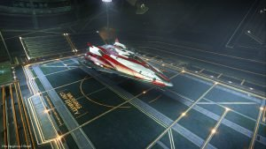

Engalo walked out the door from the Reception and Customs area and on to the docking bay floor right behind him he could hear Jennifer say: “What do you think?”. A type 9 roaring overhead as Engalo laid his eyes upon a red and white Fer De Lance. “Wow! That’s your ship Jennifer?” Engalo walks towards the ship and slides his hand across the belly of the large fighter. “Sure is, had here for 2 weeks now. Best thing that ever happened to me!” Jennifer chuckles. Engalo walks out to the edge of the docking bay to get a good look at the ships profile. “It would be better if I am flying…” Engalo grins. “Sure, and I’ll just powder my nose” Jennifer gives Engalo a piercing look. “Well… on second thought. Maybe you should fly…” Engalo smiles and walks towards the Fer De Lance’s entry ramp. When passing Jennifer Engalo mutters: “Never had my own private pilot before” Jennifer follows Engalo up the ramp shaking her head.The engines purred like cat’s as the Fer De Lance lifted off. “You know, I still don’t know the plan…” Engalo looks at Jennifer’s back as she manouvers the ship out of the station. “It’s quiet simple realy. Wheelers have sold your ship to LFT 926 Interstellar, they are taking delivery of here in 2 days time. When they have taken over the ship it will be moved to a private hangar to be modified for cargo runs. There will be limited to none security while the ship is in the private hangar. That’s when you walk in and take her back.” Well outside the station and the frame shift drive charging Jennifer swivels her chair. Engalo looking puzzeled straight at Jennifer for a while. “That’s it?” “Wel, yes..” Jennifer replies. “I’m only supposed to get you unoticed inn there. Nothing more” Engalo’s gaze soften. “Well of course, you are absolutely right. The rest is up to me.” Engalo smiles “Thanks Jennifer” Engalo walks of the bridge just as the frame shift drive kicks inn. Engalo finds a drop down bunk and lies down.
Later Engalo wakes up from the sound of a clank and the engines shutting down. “What the…” Engalo says to himself as he jumps out of the bunk. Making he’s way up to the bridge he meets Jennifer in the corridor. “Are we there already?” No. We need fuel and I know a guy here who could sell me some for a low price” Jennifer walks by not stopping while talking. Engalo continues up to the bridge and sits down in the co pilot seat. Opening up the Navigation panel Engalo checks where they are: LTT 5212 Harrison Hub 2 jumps out from Shinrarta Dezhra. After about 15 minutes Jennifer walks on to the bridge again. “We should be ready for the last two jumps in five minutes” Jennifer sits down and swivels in to place. The pilot’s chair moving slightly forward. Jennifer looks over to Engalo. “We need to place you in one of the escape pods before docking with Jameson Memorial. It’s pretty tight security and the risk of beeing scanned is…” Engalo interrupts “I know… Been thinking about it already” “Great!” Jennifer replies. The radio crackles *Refuelling finished, ready to go* “Last stretch” Jennifer says as they undock.
They stare straight inn to the sun of Shinrarta Dezhra. Jennifer banks right and plots inn Jameson Memorial. “Time to hop in to that escape pod Gunner. Engalo stands up looking at Jennifer. “Gunner?” Jennifer smiles. “Yes… Your a member of Canonn. That just made you Gunner” Engalo shakes his head “Very well” and chuckles as he walks of the bridge. Strapped inn to the Escape pod Engalo pushes the cryo button. He feels a coldness just as everything goes dark…
A voice in the distance, getting closer and closer. “…can you hear me? Engalo?” He opens his eyes. All blurry and unclear, a grey smudgy light slowly turning clear as his vision returns to normal. “Whisky and biscuits” Engalo mutters and looks around. “So, we made it?” Jennifer checks his vital signs. “Yepp. All clear for now” She smiles. “Are you allright, are you able to walk? We need to get settled. The delivery is tomorrow morning.” Engalo slowly raises to his feet. His head banging. “Sure, let’s go. I could realy need some painkillers…”
“You need a weapon, just in case” Jennifer throws a blaster to Engalo. “Hopefully I don’t need it” Engalo says and looks over the blaster pistol, then places it on he’s back between his cargo pants and belt. All ready to go Engalo turns to Jennifer. “Thanks for all your help Jennifer, I’ll see you out there someday” Engalo smiles. Jennifer takes Engalo’s hand and holds it in her’s. “Call me Jen, good luck Gunner” She smiles and punches him in the shoulder. Engalo winks at Jen as he walks out the door. “Do not look back” He thinks striding down the corridor.
“Jen was right, there’s only one guard walking rounds every 30 minutes. “Pice of cake this” Engalo sneeks up behind some crates on the left from the private hangar entrance. The gurd walks he’s 4th round exactly 30 minutes after his last. The guard turns a corner and Engalo leaps over the crates and towards the hangar door. He pushes open the code panel and short circuits the green and blue wire. The door slides open and Engalo walks inn closing the door behind him. There she is… Deptford Prize. Engalo walks up to the ship and walks up the entry ramp. Beside some forced entrys in lockers and such, the ship was in good condition. Suddenly making Engalo skip a heartbeat a voice thundered: “Hello there Commander Engalo” Engalo turn’s around grabing for his blaster holding it towards who ever this was. A pale greyish man stands tall only 3 meters away from Engalo. Two muscles on each side of him. All three pointing blasters at Engalo. “It’s over. That old thing won’t kill all of us” The greyish man gesticulates for Engalo to drop his weapon. “Who the hell are you?” Engalo asks. “It doesn’t matter, this is as far as you get my friend. Now drop that blaster!” The greyish man shouts.
Engalo now understands that the only thing keeping him alive now is his blaster firmly pointed at the greyish man. The man stares at Engalo for a few seconds. “Kill him!” the man shouts. Instinctively Engalo dropps backwards firing his blaster. Blaster fire goes everywhere. Shot’s hit the wall behind Engalo, and Engalos shot’s hitting one of the two bodyguards, the other bodyguard covers behind a table on the far side of the cargohold. Engalo doesent see where the greyish man disappears, only concentrate on finding cover. Blaster shot’s whacks to the floor around Engalo, and he feels a sharp burning pain in his shin and right shoulder.
“Fuck!” Engalo points and fires 2 rounds from his blaster towards the other bodyguard hitting him in the face. The big man falls to the floor with a thump. Quickly looking around the room, to Engalo’s surprise the greyish man is nowhere to be seen. “Must have bolted, that coward” Engalo thinks and stands up with help of the wall behind him, the burning pain from his shin and shoulder almost makes him fall. Luckily the hot plasma prevents the wounds from bleeding much. “Need to get this airborne before more show up” Turning he’s back towards the room stumbling towards the cockpit Engalo twitch as he hears a blaster fire… and then, another *Thump*
Jolted he turns around, the greyish man lying on the floor face down and Jen in the door holding a blaster in front of here. “Jen?” Engalo says surprised. She quickly holsters her blaster running over to Engalo. “Are you allright?” “Yeah, sure… It’s nothing” Engalo stumbles towards the pilot’s chair closing the entry ramp from there. “I need to get out of here quickly” Engalo overrides the launch code and the docking bay floor slides forward and slowly starts to ascend. “If you want to leave, you have to leave now!” Engalo looks up at Jen now standing beside him allready trying to dress his wounds. “I can’t leave you alone in this state, you will blackout out before you exit the system” Engalo in no mood to discuss the matter gives full throttle and boosts towards the station exit. “What about your ship?” He asks. Jen smiles gently. “I’ll have a friend pick it up and fly it over to where ever we stop, no problem” Engalo looks up at Jen. “Looks like I owe you my life as well now…” as he watches here the light in the cockpit gets darker and darker… “Ahh crap” Engalo says and blacks out.
To be continued…